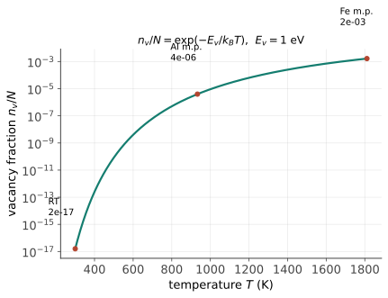
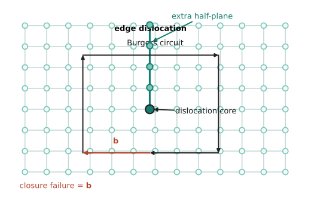
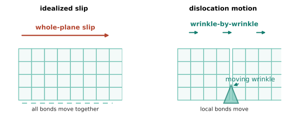
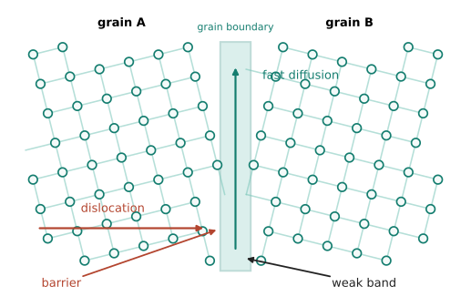

本页目录
结构 III · 缺陷：不完美的统治
本课主线的核心页。完美晶体的理想剪切强度常用 \(G/30\) 作数量级估计——按此，普通钢应能扛数 GPa，而实测退火钢屈服只有约 0.2 GPa，说明理想晶格与工程材料之间存在巨大缺口。1934 年 Taylor、Orowan、Polanyi 各自悟出同一个答案：晶体里有位错，变形不是整层原子一起滑，而是缺陷一个一个"蠕"过去。从此材料科学的世界观定型：性能不只由完美部分决定，工程可以设计缺陷的种类、数量和可动性。
学习层：给一块淬火钢算空位数，再判断哪些缺陷不能套这条指数式
1. 具体工程情境：退火、淬火与后续时效
一块合金在 1200 K 退火后快速淬到 300 K。工程师要估算高温时有多少空位可作为扩散载体，也要判断淬火后是否会瞬间回到室温平衡。这个问题只对点缺陷中的空位先做平衡近似；位错和晶界另有自己的动力学。
2. 必须作答的预测门：单位、温度趋势、淬火边界
先预测三件事：若 \(Q_v\) 用 eV，\(k_B\) 应用什么单位？升高温度会让空位分数如何变化？从高温快速淬火后，短时间内的空位数应接近高温平衡、低温平衡，还是全部为零？揭示后才显示原子位点图和期望计数。
3. 正式公式桥：无量纲分数 → 期望计数
对给定晶格位点数 \(N_s\)，最小平衡模型写成
这里的指数式是稀释、单位前因子 \(A_v=1\) 的教学形式。若把形成熵、简并度或局部振动自由能纳入完整平衡浓度，应写成 \(x_v\simeq A_v\exp[-Q_v/(k_BT)]\)；\(A_v\) 不一定为 1。若 \(Q_v\) 用 eV，就取 \(k_B=8.617333262\times10^{-5}\ \mathrm{eV\,K^{-1}}\)；指数和 \(x_v\) 都是无量纲，\(\mathbb E[n_v]\) 是期望的位点数。
以 \(Q_v=1.00\ \mathrm{eV}\)、\(N_s=10^{12}\) 为例，1200 K 时 \(x_v\) 约为 \(6.3\times10^{-5}\)，期望约 \(6.3\times10^7\) 个；300 K 时 \(x_v\) 约为 \(1.6\times10^{-17}\)，期望约 \(1.6\times10^{-5}\) 个。分数极小不等于宏观样品中绝对没有空位，要乘上位点数才知道计数。
4. 动手实验：把热历史和位点规模联动
JavaScript 失效时的静态 fallback：默认取 \(Q_v=1.00\ \mathrm{eV}\)、\(T_{\mathrm{anneal}}=1200\ \mathrm K\)、\(T_{\mathrm{service}}=300\ \mathrm K\)、\(N_s=10^{12}\)，并选择“理想瞬时冻结上界：保留退火态”。应至少得到下表的数量级：
| 量 | 约值 | 单位 / 解释 |
|---|---|---|
| \(k_BT\)（1200 K） | \(0.1034\) | eV |
| \(x_{v,eq}(1200\ \mathrm K)\) | \(6.3\times10^{-5}\) | 无量纲 |
| 高温平衡期望数 | \(6.3\times10^7\) | 个位点 |
| \(x_{v,eq}(300\ \mathrm K)\) | \(1.6\times10^{-17}\) | 无量纲 |
| 300 K 平衡期望数 | \(1.6\times10^{-5}\) | 个位点 |
| 理想瞬时冻结上界 | 约 \(6.3\times10^7\) | 真实淬火会受冷却中扩散到汇的影响，未必达到此上界 |
原子位点图是 96 个位点的确定性放大示意；真正的空位数量以透明账本为准。
5. 误区与模型边界：不是所有缺陷都服从同一条热激活指数式
- 空位公式是稀释平衡点缺陷近似：\(Q_v\) 是材料、相和化学势相关的形成能；形成熵、简并度、空位-空位相互作用和溶质-空位结合会改变前因子或有效关系。
- “淬火保留高温态”是理想瞬时冻结上界：真实保留量取决于冷却过程中空位迁移到位错、晶界、表面等汇的时间；若随后充分退火，才可能逐步向服务温度平衡靠近。
- 位错不是“更多空位”：位错是线缺陷，受应力、Peach–Koehler 力、钉扎和回复控制；晶界是界面，数量和迁移由晶粒长大、偏析和加工历史控制。不能对它们直接套空位的单点指数式。
6. 正式映射与工程后果
点缺陷提供扩散通道；位错提供塑性滑移通道；晶界既可阻挡位错，又可能成为快速扩散和腐蚀路径。淬火保留的空位过饱和会加速时效、析出或回复，但具体结果取决于迁移率、陷阱和时间，不是只看一个平衡分数。
迁移问题：如果位点数 \(N_s\) 增加 \(10^6\) 倍而 \(Q_v,T\) 不变，空位分数会变吗，期望计数会变吗？如果显微组织主要由晶界密度改变，你会选择空位形成能、位错密度还是晶界面积作为下一项输入？
1. 缺陷动物园（按维度点名）
0 维 · 点缺陷：空位、间隙原子、置换/间隙杂质。只要温度高于绝对零度，理想晶格通常会有热平衡空位；形成耗能但赚熵，最小模型的平衡浓度
（【推】混合熵 + 最小化自由能一步；\(Q_v \sim 1\) eV 时室温可低至 \(10^{-17}\)，高温则指数增加，具体数量级随材料、形成熵和温度而变——指数的巨大跨度）。点缺陷是扩散的载体（热力 II：没有可迁移的点缺陷就很难发生常规晶格扩散）与半导体掺杂的本体（功能 I：极低浓度的磷原子也能显著改变硅的电导——缺陷工程惊人的杠杆）。

1 维 · 位错（本页主角）：晶格中多插半张原子面的边界线（刃型）或螺旋错排（螺型），用 Burgers 矢量 \(\mathbf{b}\) 定量（绕缺陷一圈的闭合差——拓扑不变量：位错线不能凭空终止于晶内，只能成环或到界面，这是"拓扑保护"在材料里的原生案例）。

滑移的地毯机制：整层滑动要同时断开一整面的键（\(G/30\) 的来源）；位错滑移每次只挪一列原子——像推地毯上的褶皱过屋、而不是拖整张地毯。所需应力（Peierls 应力）比理论强度低几个数量级——百倍强度之谜三行解开。金属能加工、能轧成箔拉成丝，全拜位错所赐。

2 维 · 界面：晶界（取向差界面——原子错排带，既是位错的墙、又是扩散的高速路和腐蚀的起点）；孪晶界；相界；表面。3 维：析出相、孔隙、夹杂——性能 I/II 的强化与失效之源。
2. 位错的三条工作性质
- 应力场与相互作用：位错周围有弹性应力场（能量 \(\sim Gb^2\) 每单位长度）——同号相斥异号相吸；缠结使继续变形越来越难 ⇒ 加工硬化（冷拔铁丝越弯越硬的微观真相）；
- 增殖：Frank–Read 源在应力下像吹泡泡一样批量造位错（退火金属 \(10^6\)、重变形金属 \(10^{15}\ \mathrm{m}^{-2}\)——位错密度九个数量级的可调范围，是"缺陷工程"的主操纵杆）；
- 受阻：任何破坏晶格周期性的东西都挡位错——溶质原子、晶界、析出粒子、别的位错。性能 I 的"强化四法"就是这四种障碍物的目录（本页埋种，那页收割）。
3. 晶界：第二主角
晶界的双面性格一张表：
| 晶界作为… | 后果 | 出场页 |
|---|---|---|
| 位错的墙 | 细晶强化（Hall–Petch：\(\sigma_y = \sigma_0 + k d^{-1/2}\)） | 性能 I |
| 扩散高速路 | 晶界扩散快体扩散几个数量级；烧结与蠕变的通道 | 热力 II、工艺 II |
| 化学薄弱带 | 晶间腐蚀、偏析、脆化 | 工艺 IV |
| 高温的软肋 | 蠕变时晶界滑动 ⇒ 涡轮叶片干脆做成单晶（消灭晶界） | 前沿 I |

同一个缺陷，低温是英雄高温是叛徒——"缺陷好坏取决于服役条件"是选材判断力的核心一课。
4. 数字感与反直觉清单
- 理论强度 \(\sim G/30 \approx\) 钢 7 GPa；实际退火纯铁 ~0.1 GPa；最强钢丝（琴钢丝，位错被操纵到极致）~4 GPa——从"被缺陷拖累"到"用缺陷武装"，工程在两个数量级间穿行；
- 位错密度 \(10^6 \to 10^{15}\ \mathrm{m}^{-2}\)：重变形金属每立方厘米的位错总长可达上千万公里（绕地球数百圈）；
- 反直觉三连：最纯的金属最软（没有溶质挡位错）；晶须/无缺陷微晶能逼近理论强度（证明理论没错，错的是以为晶体完美）；想让金属更强，不是消灭缺陷，而是让缺陷动弹不得——全课最重要的一句话。
【研】位错理论对标 Hull & Bacon《Introduction to Dislocations》；应力场推导、Peach–Koehler 力、部分位错与堆垛层错（FCC 塑性的精细结构）是研究生第一学期的功课。
缺陷讲完了晶体的世界。可要是干脆不要晶格呢？下一页：非晶与玻璃——无序的秩序。